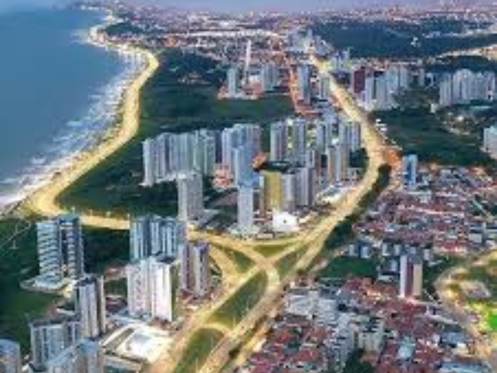

O Maranhão fica na parte oeste da Região Nordeste e possui características do Nordeste e da Amazônia. Sua capital é São Luís, famosa pelo centro histórico e pelas festas culturais. O estado possui clima quente e áreas de floresta, cerrado e manguezais. A economia é baseada na agricultura, pecuária, comércio e no Porto de Itaqui, um dos mais importantes do Brasil. O Maranhão também é conhecido pelos Lençóis Maranhenses, um dos principais pontos turísticos do país. A cultura maranhense possui influência indígena, africana e europeia. O bumba meu boi é uma das manifestações culturais mais famosas. Apesar das riquezas naturais, o estado ainda enfrenta problemas sociais e econômicos. O Maranhão possui grande importância cultural e turística para o Brasil.

Voltar